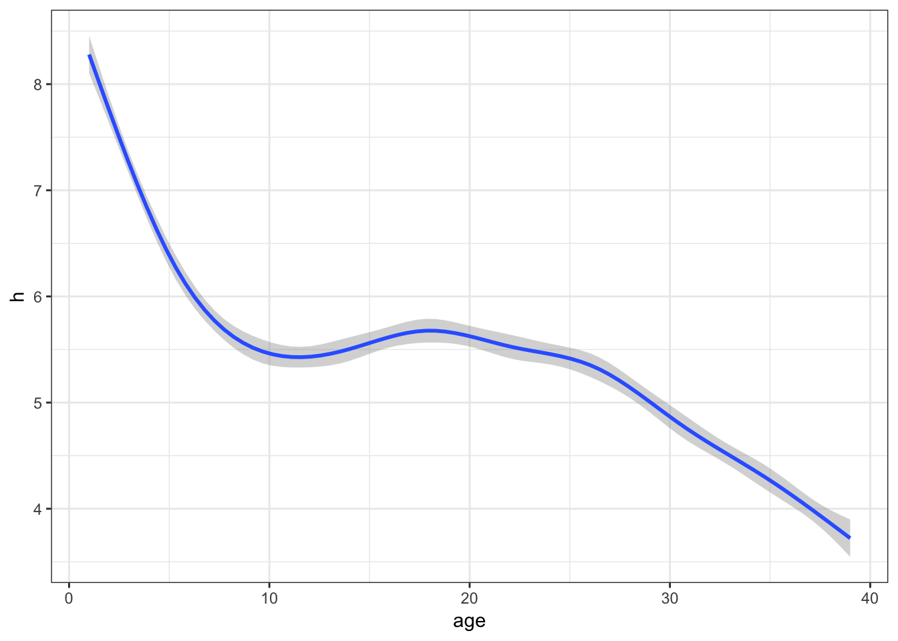

Dynamic labor supply
A simple numerical model
We are going to cover the first steps to solving and simulating a dynamic programing problem. We consider a labor supply problem with asset and simple choices over hours. We will allow for sthochastic productivity. We are going to consider here a finite horizon problem.
The decision problem for the agent is to choose every period, how much to consume, how much to work and how much to save. We are going to solve this at a yearly frequency over 50 years.
Setting the environment
The state space is given by age, producitivity and asset level. We consider the separable utility function over leisure and consumption. We fix all parameters. WE also consider a simple end of life value.
We prepare the wage realizations in each state and the value function.
p = list(nx=30,na=40,nb=100,nh=10,gamma = 2, eta=-1.5 , lambda=0.1,r=0.02,beta=5,fc=1)
V = array(0,c(p$na,p$nx,p$nb))
X = exp( qnorm((1:(p$nx))/(p$nx+1)))
B = c(0,exp(seq(log(min(X)),log(max(X/p$r)),l=p$nb-1)))
H = seq(0,1,l=p$nh)
wage = X
# transition matrix on productivity
X1 = spread(X,1,p$nx);X2 = spread(X,2,p$nx);
Gx = dnorm(log(X2)-log(X1))
Gx = Gx/spread(rowSums(Gx),2,p$nx)
persp(Gx)We then solve the dynamic problem recursively. In the last period, we let the agent choose a single consumption and hours value that will make asset level 0.
First step is to solve the final period problem. We assume that the agent has a access to a producitivity which is a thrid of the last period one, and then choose hours and consumption to make asset to 0.
t.final = tensorFunction(R[b,w,h] ~ ((W[w]*H[h] + r*B[b])^(1+eta))/(1+eta) - beta*((H[h])^(1+gamma))/(1+gamma) - I(H[h]>0)*fc)
VV = t.final(X/3,H,B,p$r,p$eta,p$beta,p$gamma,p$fc)
Vf = aaply(VV,c(1,2),max,na.rm=T)
# plotting the function
ggplot(melt(Vf,c("b","x")),aes(x=b,y=value,color=x,group=x))+geom_line() + theme_bw() + scale_x_continuous("asset position")We then solve the values recursively
V[p$na,,] = t(Vf)/p$r
# prepare tensor that computes the Q value for each b,x,h,b2
t.cur = tensorFunction(R[b,x,h,b2] ~ ((W[x]*H[h] - B[b2] + (1+r)*B[b])^(1+eta))/(1+eta) - beta*((H[h])^(1+gamma))/(1+gamma) + rho*VV[x,b2] - I(H[h]>0)*fc )
B.pol = V*0
H.pol = V*0
for (age in (p$na-1):1) {
# compute expected value tomorrow
EV = Gx %*% V[age+1,,]
# compute values at each control variables
Vn = t.cur(W=X*exp(p$lambda * age/p$na) ,H,B,EV,p$r,p$eta,p$beta,p$gamma,1/(1+p$r),p$fc)
# we need to choose the asset tomorrow and hours (which then gives consumption)
V[age,,] = t(aaply(Vn,c(1,2),max,na.rm=T))
# extract policy
pol = aaply(Vn,c(1,2),function(A) which(A==max(A,na.rm=T),arr.ind = T,useNames = T))
B.pol[age,,] = t(pol[,,2])
H.pol[age,,] = t(pol[,,1])
cat(".")
}## .......................................# let's plot hours at fix x and b over time
rr= data.table(melt(H.pol[,,25],c("age","x")))
ggplot(rr[x %in% c(5,10,15,20,25)][age<40],aes(x=age,y=value,color=x,group=x)) + geom_line()Simulating data
Finally we simulate some data
simdata = data.frame()
D = array(0,c(p$na-1,6))
colnames(D) = c("i","x","b","h","b2","age")
for (i in 1:1000) {
x=sample.int(p$nx,1)
b=1
for (age in 1:(p$na-1)) {
x = sample.int(p$nx,1,prob=Gx[x,])
D[age,1] = i
D[age,2] = x
D[age,3] = b
D[age,4] = H.pol[age,x,b]
D[age,5] = B.pol[age,x,b]
D[age,6] = age
b = B.pol[age,x,b]
}
simdata=rbind(simdata,data.frame(D))
}
simdata = data.table(simdata)
simdata[,lw := log(X[x]),x]
simdata[,lb := log(B[b]),b]
# choice of hours
ggplot(simdata,aes(x=age,y=h)) + geom_smooth() +theme_bw()## `geom_smooth()` using method = 'gam'
# compute asset
ggplot(simdata,aes(x=age,y=lb)) + geom_smooth()## `geom_smooth()` using method = 'gam'## Warning: Removed 2072 rows containing non-finite values (stat_smooth).
simdata[,hist(h)]## $breaks
## [1] 1.0 1.5 2.0 2.5 3.0 3.5 4.0 4.5 5.0 5.5 6.0 6.5 7.0 7.5
## [15] 8.0 8.5 9.0 9.5 10.0
##
## $counts
## [1] 16159 0 0 0 0 0 0 111 0 2886 0
## [12] 1534 0 5406 0 5103 0 7801
##
## $density
## [1] 0.828666667 0.000000000 0.000000000 0.000000000 0.000000000
## [6] 0.000000000 0.000000000 0.005692308 0.000000000 0.148000000
## [11] 0.000000000 0.078666667 0.000000000 0.277230769 0.000000000
## [16] 0.261692308 0.000000000 0.400051282
##
## $mids
## [1] 1.25 1.75 2.25 2.75 3.25 3.75 4.25 4.75 5.25 5.75 6.25 6.75 7.25 7.75
## [15] 8.25 8.75 9.25 9.75
##
## $xname
## [1] "h"
##
## $equidist
## [1] TRUE
##
## attr(,"class")
## [1] "histogram"